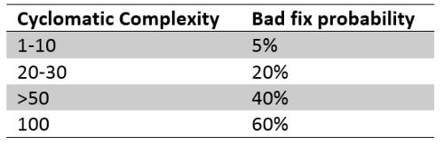

Сергей Жигалов
Сергей Жигалов
Курс разработки интерфейсов, 2014 г.
Writing software is the hardest thing people do (c) Douglas Crockford


before(function () {mockery.enable();});after(function () {mockery.disable();});

function abs(number) {return number >= 0 ? number : -number;}
 Читать
Читать